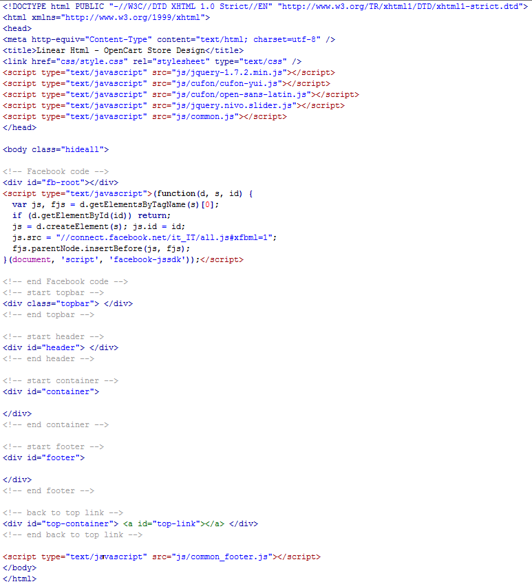
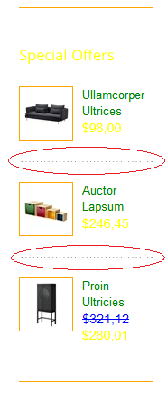
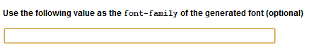

Created: 21/06/2012
By: Aldema Studio
Email: info@aldemastudio.com
Thank you for purchasing my theme. If you have any questions that are beyond the scope of this help file, please feel free to email via my user page contact form here. Thanks so much!
This theme is a fixed layout with two colums. All of the information within the main content area (the left column) is nested within a div with an id of "container". The main site area is the"#leftcol", whereas the sidebar's (the right column) content is within a div with an id of "rightcol". At the top of the template there is the #topbar, the thin dark bar with the currency and language switchers and a small menu. The #header div contains the header, including the logo, the cart box and the horizontal top menu. The #footer contains the lower dark part of the site: and extended version of the footer includes also a #category div in the #container. The template structure is the same throughout the template. Here is the general structure.
In Linear there are 19 different pages:
I'm using two CSS files in this theme: style.css and fb.css, both located in the css/ directory. The generic reset file is included at the beginning of style.css. This file also contains some general styling, especially in the first part of the style sheet.. If you would like to edit the main styles of the template find the following line:
/* ----------------------------------- START MAIN STYLES, BACKGROUNDS AND BORDERS -----------------------------------*/
Many css classes are grouped togheter, so that you can change text colors, borders, and backgrounds by editing just few lines:
If you find that your new style is not overriding, it is most likely because of a specific problem. Scroll down in your CSS file and make sure that there isn't a similar style that you added and that has more weight. Or just add the "!important" attribute to the property that do not seem to work properly.
I.E.
#somediv .someclass a {
color: #someColor !important;
}
So, to ensure that your new styles are applied, make sure that they carry enough "weight" and that there isn't a style lower in the CSS file that is being applied after yours.
If you're looking the style for a particular elements or page, find the proper comment. eg:
/* NIVO SLIDER */ <---- nivo classes here ----> /* END NIVO SLIDER */or:
/* ---------------- START PRODUCT PAGE ---------------- */
<---- product page classes here ----> /* ---------------- START ANOTHERE PAGE ---------------- */
That should make the editing of the template easier, but you still need some CSS basic skills to achieve radical changes to Linear.
The second file (fb.css) contains the Facebook style, but we'll talk about it later, in the Facebook part.
If you would like to edit a specific section of the site, simply find the appropriate label in the CSS file, and then scroll down until you find the appropriate style that needs to be edited. If you're going to edit the template heavily, we suggest you to use Firebug: this useful tool allows you to find out the class of an element and the style being applied to it (including its line number in the CSS code) with just a right click while browsing the template page.
This theme imports few local Javascript files.
Linear uses many jquery plugin. Here is a complete list of them:
As usual, the code is properly commented so you should be able to spot easily the lines or the plugins you need. All jquery calls to plugin or functions are whitin the following comments:
/* -------------- START CUSTOM JAVASCRIPT BLOCK -------------- /* <---- code here ----> /* -------------- END CUSTOM JAVASCRIPT BLOCK -------------- /*
If you need to add some custom js code (eg: few lines of a jquery function), put it inside those comments, at the end.
I've included four psds in this file::
Also I've included three png Fireworks files:
If you'd like to change the logo image in the header, open "logo.png", make the necessary adjustments, and then save the file as "logo.png" in the "images" directory.
After developing our latest template, Basico, we decided to write a brief "How To" guide. Hopefully this will you save you (and us) lots of time by explaing how to make a basic customization of the template. So please, before asking for help on Themeforest or via email, make sure you have read the following chapter.
1) HOW CAN I CHANGE TEXT OR LINK COLORS?
As explained here, we grouped the css classes to make the colors editing easier. For example, if you need to change links color find the proper comment at the beginning of the css file:
/* LINK STYLE */
someclasses { color: #putyournewcolorhere }
/* backgrounds and borders */
someclasses{ background: #putyournewcolorhere
}
/* END LINK */
We added also some comments next to the color value you need to edit. Eg:
someclasses {
color:blue; /* edit the color here */
}
Do the same for the borders etc.
2) HOW CAN I CHANGE PATTERNS AND BACKGROUNDS?
To change the background color, edit these css lines:
/* HEADER COLOR AND BORDERS */
.topbar, #showcase.jcarousel .nivo-controlNav a:first-child:hover { /* upper menu/language bar */
background-color:#2E2E2E; /* edit the color here */
}
.jquery-selectbox {
border-style:solid;
border-color:#2E2E2E; /* edit the color here - must be the same of the .topbar color */
}
/* END HEADER AND BORDERS */
Patterns are backgrounds applied to the header bar and the footer. They are disabled by default, but you can apply them by editing these lines:
/* PATTERNS */
.topbar, #footer{
background-image:none; /* edit the pattern here */
background-repeat:repeat;
}
Put one of the following values instead of "none" to apply a pattern:
3) WHY IS THE DOTTED LINE STILL GRAY AFTER CHANGING BORDER COLORS?
We're talking about this:

It happens because that's an image, so if you want to change it, edit the file called dottedbg.jpg in the images/ folder with a proper image editing software.
4) HELP! A CHARACTER (OR THE ENTIRE ALPHABET OF MY LANGUAGE) IS NOT DISPLAYED!
This was absolutely the most common problem of our previous release. Unfortunately, a chosen font by the developer could not support every language and character. If you don't see your alphabet properly or it's not displayed at all (as it may happen to chinese, russian, turkish, vietnamese, etc, users) you need to replace our font with your language's one. First, find a cool font that supports your language, than load it here. Make sure you type "Open Sans" in this input-box:

Even if it's not the correct name of your font, this will prevent you from editing more files, since that line pretends that the OpenSans font is still used by the template. Download the new font, rename it "open-sans-latin.js" and replace the file with the same name in in js/cufon.
5) CAN CATEGORY SUBMENUS IN SIDEBAR STAY OPEN?
Yes, you can obtain the same menu used in category page, but with all the submenus open. DO NOT ADD the "hoverable" class to the submenu <ul> tag. IE:
<!-- start subnav -->That was the normal category menu, with the submenus displayed only on hover. And this one is the category menu with submenu always open:
<div class="subnav rightcol-block">
<h4 class="red">Categories</h4>
<ul class="sf-menu sf-vertical">
<li><a class="subnav-link" href="category-page.html" title=""><strong> Kitchen & Eating </strong> (13)</a></li> <li><a class="subnav-link" href="category-page.html" title=""><strong> Wall decoration</strong> (5)</a></li> <li><a class="subnav-link" href="category-page.html" title=""><strong> Children Room</strong> (2)</a></li> <li><a href="category-page.html" title="" class="subnav-link"><span><strong> Outdoor & Garden</strong> (11)</span></a> <ul class="hoverable">
<li><a href="category-page.html" title="">Relax</a></li>
<li><a href="category-page.html" title="">Storage</a></li>
<li><a href="category-page.html" title="">Plant pots</a></li>
</ul>
</li>
<li><a class="subnav-link" href="category-page.html" title=""><strong> Living Room</strong> (0)</a></li> <li><a class="subnav-link" href="category-page.html" title=""><strong> Laundry & Cleaning</strong></li> <li><a class="subnav-link" href="category-page.html" title=""><strong> Baby Textiles</strong> (2)</a></li> <li><a class="subnav-link" href="category-page.html" title=""><strong> Home Office</strong> (4)</a></li> </ul>
</div>
<!-- end subnav -->
<!-- start subnav -->
<div class="subnav rightcol-block">
<h4 class="red">Categories</h4>
<ul class="sf-menu sf-vertical">
<li><a class="subnav-link" href="category-page.html" title=""><strong> Kitchen & Eating </strong> (13)</a></li> <li><a class="subnav-link" href="category-page.html" title=""><strong> Wall decoration</strong> (5)</a></li> <li><a class="subnav-link" href="category-page.html" title=""><strong> Children Room</strong> (2)</a></li> <li><a href="category-page.html" title="" class="subnav-link"><span><strong> Outdoor & Garden</strong> (11)</span></a> <ul> NO "HOVERABLE" CLASS ADDED
<li><a href="category-page.html" title="">Relax</a></li>
<li><a href="category-page.html" title="">Storage</a></li>
<li><a href="category-page.html" title="">Plant pots</a></li>
</ul>
</li>
<li><a class="subnav-link" href="category-page.html" title=""><strong> Living Room</strong> (0)</a></li> <li><a class="subnav-link" href="category-page.html" title=""><strong> Laundry & Cleaning</strong></li> <li><a class="subnav-link" href="category-page.html" title=""><strong> Baby Textiles</strong> (2)</a></li> <li><a class="subnav-link" href="category-page.html" title=""><strong> Home Office</strong> (4)</a></li> </ul>
</div>
<!-- end subnav -->
6) HOW CAN I CUSTOMIZE THE FACEBOOK BOX IN THE FOOTER?
If you want to edit the Facebook account displayed there, edit js/facebook-box.js and replace this:
profileid="109822959866"
with:
profileid="YOURID"
If you don't know how to get your page ID, read this. Also, do not forget that the Facebook box works ONLY with Facebook PAGES and not with a common USER account. For example, if you have created a normal USER account for your shop, as if it was a real person, don't expect that it will work in the Facebook Box. Instead, create a fan page from that account and put its ID in the box.
If you need to change colors of the elements in the box, open css/fb.css and edit the following classes:
.total {
display: block;
margin-bottom: 6px;
margin-top:11px;
color: #666666; /* EDIT THIS VALUE TO CHANGE THE COLOR OF THE TOTAL LIKES COUNT */
font-size: 12px;
font-family:Arial, Helvetica, sans-serif;
}
.fan_box .connections_grid .grid_item .name {
color: #666666; /* EDIT THIS VALUE TO CHANGE THE COLOR OF THE NAMES */
}
.fan_box .connections_grid .grid_item:hover .name {
color: #D94A38; /* EDIT THIS VALUE TO CHANGE THE COLOR OF THE NAMES ON HOVER */
}
.grid_item img {
margin-bottom: 3px;
padding: 5px;
background: #fff;
border-bottom: 1px solid #e5e5e5; /* EDIT THE COLOR OF THE IMAGES BORDER */
-moz-box-shadow: 0 0 3px rgba(0, 0, 0, 0.2);
-webkit-box-shadow: 0 0 3px rgba(0, 0, 0, 0.2);
}
.grid_item a:hover img {
border-bottom: 1px solid #c5c5c5; /* EDIT THE COLOR OF THE IMAGES BORDER ON HOVER*/
}
After saving this file, DO NOT FORGET to edit also js/facebook-box.js:
document.write('<fb:fan profileid="109822959866" stream="0" connections="4" logobar="0"
width="355" height="140" css="http://www.aldemastudio.com/template/Linear/HTML/css/fb.css?12"></fb:fan>')
The path of the css file (in this case: "http://www.aldemastudio.com/template/Linear/HTML/") must be absolute. So edit it and replace "http://www.aldemastudio.com/template/Linear/HTML/" with "http://www.yoursitename.com/yourlineardirectory". Change "12" with a bigger random number, since that one is stored in the cache already. If you won't type a new number, the previous changes to the css file won't take effect and the custom Facebook Box will not be displayed.
7) HOW CAN I USE MY TWITTER ACCOUNT WITH THE TWITTER BOX IN THE FOOTER?
The content shown in the Twitter box can be changed by editing the following line in each template page:
<script type="text/javascript" src="http://twitter.com/statuses/ user_timeline/WPNewsStation.json?callback=twitterCallback2&count=2"></script>
Insert the Twitter account name you want to display instead of "WPNewsStation" and save the file.
8) HOW CAN I CHANGE THE HOVER EFFECT ON PRODUCTS?
Edit these lines in js/common.js:
// START GENERAL IMAGES THUMBNAIL FADE IN
$('.fadeable').mouseenter(function(e) {
$(this).children('img').fadeTo(300, 0.5); //for standard images - 0.5 = OPACITY LEVEL; 300 = time in ms $(this).children('span.light-background').fadeIn(300); //for the small arrow with the light background - 300 = time in ms }).mouseleave(function(e) {
$(this).children('img').fadeTo(300, 1); //for standard images - 300 = time in ms
$(this).children('span.light-background').fadeOut(300); //for the small arrow with the light background - 300 = time in ms
});
// END GENERAL IMAGES THUMBNAIL FADE IN
// START SLIDER2 THUMBNAIL FADE IN
$('.fadeable2').mouseenter(function(e) {
$(this).children('img').fadeTo(300, 0.5); //for standard images - 0.5 = OPACITY LEVEL; 300 = time in ms
}).mouseleave(function(e) {
$(this).children('img').fadeTo(300, 1); //for standard images - 300 = time in ms });
// END SLIDER2 IMAGES THUMBNAIL FADE IN
// START GENERAL IMAGES THUMBNAIL FADE IN INVERSE. IE: index
$('.fadeable-inverse').mouseenter(function(e) {
$(this).children('img').fadeTo(300, 1); //300 = time in ms
}).mouseleave(function(e) {
$(this).children('img').fadeTo(300, 0.50); //0.5 = OPACITY LEVEL; 300 = time in ms
}); // END GENERAL IMAGES THUMBNAIL FADE IN INVERSE
9) HOW CAN I CUSTOMIZE THE SLIDER EFFECT IN INDEX AND INDEX-2?
Edit these lines in js/common.js:
// NIVO SLIDER
$('#slider').nivoSlider({
effect: 'random', // Specify sets like: 'fold,fade,sliceDown'
slices: 15, // For slice animations
boxCols: 8, // For box animations
boxRows: 4, // For box animations
animSpeed: 500, // Slide transition speed
pauseTime: 8000, // How long each slide will show
startSlide: 0, // Set starting Slide (0 index)
directionNav: false, // Next & Prev navigation
directionNavHide: false, // Only show on hover
keyboardNav: true, // Use left & right arrowss
pauseOnHover: true, // Stop animation while hovering
manualAdvance: false, // Force manual transitions
});
// END NIVO SLIDER
// JCAROUSEL SLIDER
$(".slider-wrapper-cycle").jCarouselLite({
wrap:"circular",
speed:1000, // Slide transition speed
auto:8000, // How long each slide will show
btnNext: ".navbuttons a.last-child",
btnPrev: ".navbuttons a:first-child"
});
// END JCAROUSEL SLIDER
10) HOW CAN I CUSTOMIZE THE FANCYBOX PLUGIN IN PRODUCT-PAGE-2?
Edit these lines in js/common.js:
//FANCYBOX
$(".fancy-img").fancybox({
'transitionIn' : 'elastic',
'transitionOut' : 'elastic',
'speedIn' : 600,
'speedOut' : 200,
'overlayShow' : false
});
//END FANCYBOX
11) HOW CAN I USE THE BUTTONS?
There is a complete list of available buttons in the full elements page. To use them use the following code:
1) <a href="#" class="button-default cart dark"><span class="hover">BUTTON 1</span> <span>BUTTON 1</span></a> 2) <a href="#" class="button-default cart"><span class="hover">BUTTON 2</span> <span>BUTTON 2</span></a> 3) <a href="#" class="button-default cart dark light"><span class="hover">BUTTON 3</span> <span>BUTTON 3</span></a> 4) <a href="#" class="button-default cart light"><span class="hover">BUTTON 4</span> <span>BUTTON 4</span></a> 5) <div class="button-cart general dark"><a href="#">BUTTON 5</a></div> 6) <div class="button-cart general"><a href="#">BUTTON 6</a></div>
Many buttons are simple <a> tags: if you want to use them as input buttons, add this to the button's code:
onclick="$(this).closest('form').submit();"
For example:
<div class="button-cart general dark"><a href="#">BUTTON 5</a></div>
Becomes:
<div class="button-cart general dark"><a href="#"
onclick="$(this).closest('form').submit();">BUTTON 5</a></div>
12) HOW CAN I CHANGE THE EMAIL ADDRESS FOR THE CONTACT FORM?
Simply edit the file "send.php" and replace this:
myemail@gmail.comWith your email address.
We have used some third part images and files, so we'd like to thank:
A special thanks also to the creatorS of used plugins. The link to their sites are in this chapter.
Once again, thank you so much for purchasing this theme. As I said at the beginning, I'd be glad to help you if you have any questions relating to this theme. No guarantees, but I'll do my best to assist. If you have a more general question relating to the themes on ThemeForest, you might consider visiting the forums and asking your question in the "Item Discussion" section.
Aldema